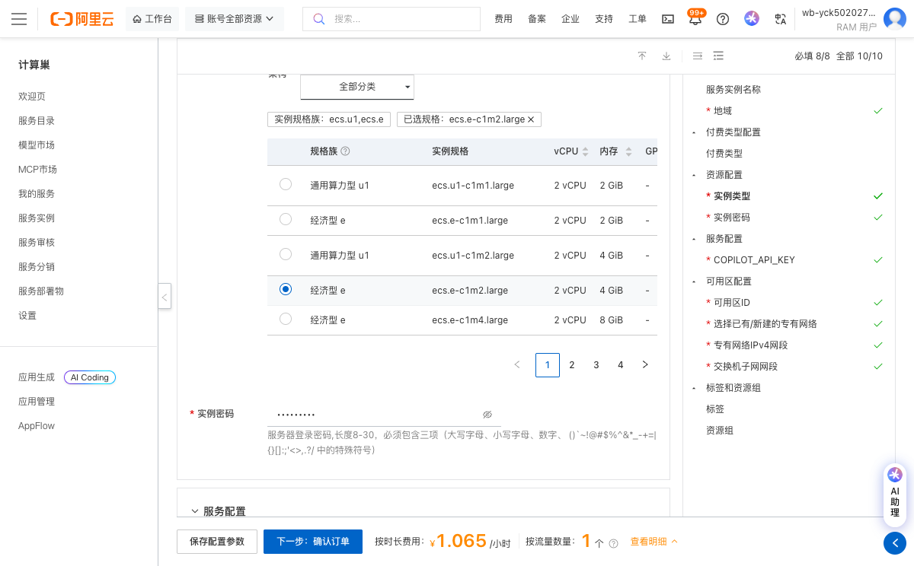

Sim 社区版服务实例使用文档
概述
Sim 是 Sim Studio 平台的核心运行时引擎或智能体执行框架。它不是一个完整的图形界面工具，而是支撑 Sim Studio 前端（如 Web UI）背后 AI Agent 工作流执行、工具调用、记忆管理与多智能体协作的后端服务。
部署操作流程
-
点击链接：部署链接，进入服务实例部署界面，根据界面提示，填写参数。
)
-
查看价格明细，确认资源配置和费用信息。
-
点击"下一步：确认订单"按钮进入下一步。
-
点击创建实例，系统将开始部署服务实例。
-
等待服务实例创建完成，可在实例详情页面查看部署状态。

-
点击公网访问地址使用服务（实际地址将在实例创建完成后显示）。

官方网站
更多信息请访问官方文档：官网链接
© 2009-2022 Aliyun.com 版权所有